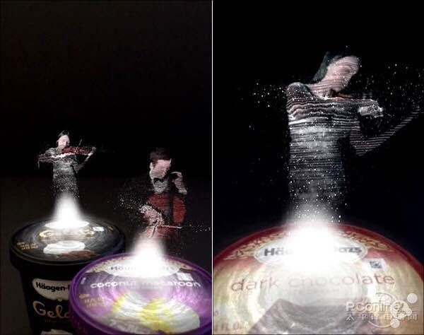

哈根达斯——2分钟的音乐会

Concerto Timer是这家着名冰激凌企业推出的一款AR应用，使用方法是下载这款软件，然后通过摄像头对准任意一个哈根达斯商标，这时瓶盖上就会出现一个虚拟的音乐家演奏小提琴曲。而且这款应用最大一个亮点是，如果你买一盒就会出现一个小提琴手，买两盒则会多出一位大提琴手加入演奏。实话实说，营销的确给力！
哈根达斯音乐会
PS：很多人不明白为何叫“2分钟音乐会”，道理很简单，这个音乐家只会给你演奏2分钟的音乐，而2分钟恰恰是官方认为的冰激凌融化入口的最佳时间。也就是说，当你听完这组音乐时，冰激凌也就到达最好吃的一个阶段，这下明白了吧。
AR-interesting，an interesting web
copyright 2016 By Interesting Working Group
Most contents above (photos included) are derived from the Internet.